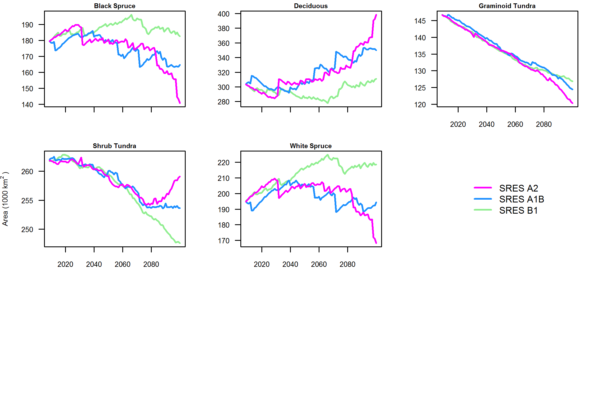
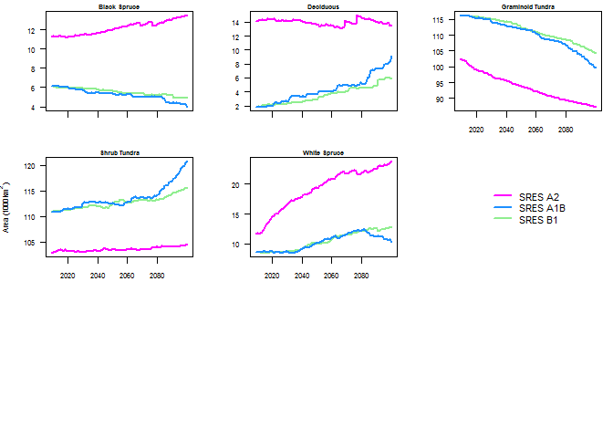
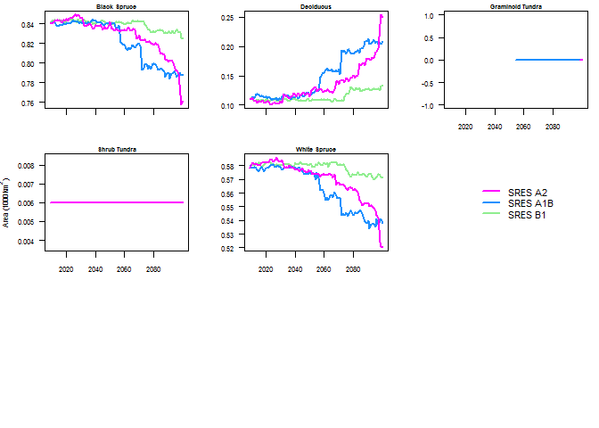
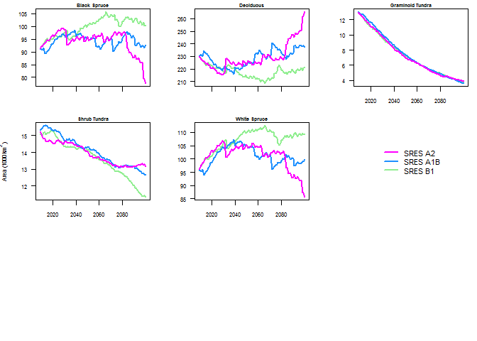
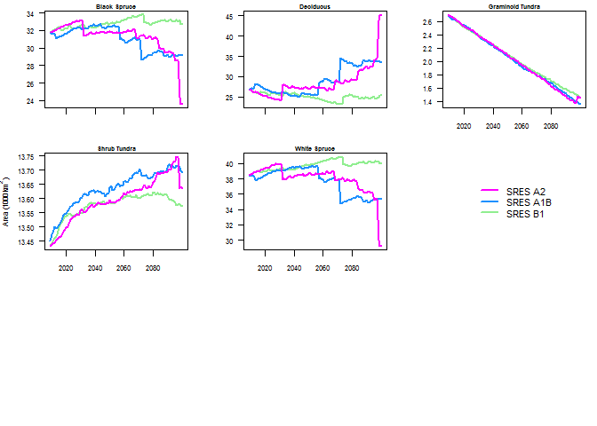
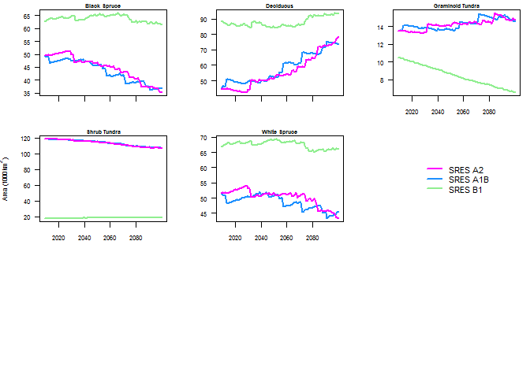

The below graph relates to figure 6.3 in the original document. This uses strictly ALFRESCO output.

All five following separate LCC graphs relate to figure 6.3 in the original document. This uses strictly ALFRESCO output.




